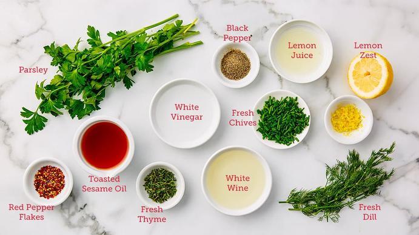

I used to think salt was just salt. You add some to make things taste less bland. Who cares if you’re off by a little? Then I tried to reduce the sodium in my family’s diet because my husband’s doctor told him to watch his blood pressure. I cut the salt in half in a pot of chili. Just like that, halved it. That chili was the most depressing thing I’ve ever eaten. It tasted like beans and sadness. My husband ate a bowl without complaining because he’s nice, but I could tell he hated it. The kids pushed it around their bowls and asked for cereal.
I learned that day that salt reduction is not a light switch. You can’t just turn it off. You have to dial it down slowly, give your taste buds time to adjust, and find other ways to make food taste like something.
After about a year of experimenting, I landed on the 25 percent rule. Reduce salt by a quarter, not a half. Leave it there for a week or two. Your palate adapts. Then reduce another 25 percent from the original. Repeat until you hit your target. It’s slow, but it works. And the food still tastes good the whole time.
Let me explain why this matters for scaling recipes. Because if you’re scaling a low‑sodium recipe, the math gets weird. Salt doesn’t scale linearly in regular recipes, and it definitely doesn’t scale linearly when you’re already messing with the baseline.
First, let’s talk about why salt is such a pain. Salt does three things in food. It makes things taste more like themselves. A pinch of salt in chocolate chip cookie dough makes the chocolate taste more chocolatey. Sounds fake but it’s true. Second, salt controls yeast. In bread, salt slows down fermentation. Too little salt and your bread rises too fast and then collapses. Too much and it barely rises at all. Third, salt affects texture. In cured meats and fermented vegetables, salt changes the structure. In baking, it strengthens gluten.
So when you reduce salt, you’re not just making things less salty. You’re changing how the whole recipe behaves.
That chili I ruined? It was too late by the time I tasted it. The beans were mushy. The texture was off. I had no idea salt did that.
Now when I develop low‑sodium recipes, I start with a baseline of 25 percent less salt than the original. I make a small batch. I taste it. If it’s okay, I live with that level for a couple weeks. I make the recipe again at the same reduced level. Usually by the second or third time, it tastes normal. My palate has adjusted. Then I reduce another 25 percent from the original.
I keep doing this until I hit a reduction where the food genuinely tastes bad. That’s my limit. For some dishes, I can reduce salt by 75 percent before it’s inedible. For others, I can only do 25 or 50 percent. Bread is the hardest. Bread without enough salt tastes flat and bland, and the texture is wrong. I’ve only been able to reduce salt in bread by about 30 percent before my family revolts.
The good news is that once you have a low‑sodium version of a recipe that works, scaling it is not that different from scaling a regular recipe. Salt still uses the 0.85 exponent. But your baseline is lower.
Here’s an example. Let’s say you have a soup recipe with 10 grams of salt. You reduce it by 25 percent to 7.5 grams. That’s your low‑sodium version at 1x scale. Now you need to scale that soup to 8x for a party. The regular scaling math for salt would be 10 grams times 8 to the 0.85 power, which is 10 times 5.8 equals 58 grams. That’s for the regular version.
For your low‑sodium version, you take the reduced baseline of 7.5 grams and multiply by the same 5.8. That gives you 43.5 grams. That’s a lot less salt than the 58 grams you’d use in the regular version. But it’s still enough to season the soup properly.
I messed this up once. I had a low‑sodium marinara sauce that I’d spent months perfecting. I scaled it from 4 servings to 40 for a pasta dinner at my kids’ school. I used the linear scaling method because I was in a rush. I multiplied the reduced salt by 10. The sauce was so salty nobody ate it. I had to throw away like 6 gallons of sauce. The school was not happy.
Now I use the tool for this.
Umami is your friend too. Mushrooms, tomatoes, nutritional yeast, soy sauce (low‑sodium if you can find it), fish sauce, anchovies—these ingredients contain glutamates that hit the same savory notes as salt. I keep a jar of dried mushroom powder in my spice cabinet. I throw a teaspoon into almost every soup and sauce I make. It adds depth without adding sodium.
Herbs are obvious but underused. Rosemary, thyme, oregano, parsley, cilantro—they bring their own flavor. When you reduce salt, you need to increase herbs. Not double, but maybe by a third. Start with 30 percent more herbs and see how it tastes.
I have a low‑sodium chicken soup recipe that I’ve made maybe 30 times. The original had 2 teaspoons of salt for 6 servings. I reduced it to 1.5 teaspoons. That was fine but a little flat. Then I added a tablespoon of lemon juice, a teaspoon of mushroom powder, and an extra half teaspoon of dried thyme. Suddenly it tasted better than the original. My husband didn’t believe it had less salt.
That’s the goal. Not just less salt, but differently seasoned. You’re not taking away. You’re replacing.
When you scale a low‑sodium recipe that uses these cheats, the cheats scale differently. Acid scales linearly. If you add 1 tablespoon of lemon juice at 1x, you add 10 tablespoons at 10x. Herbs scale linearly too. Mushroom powder scales linearly. Those are easy.
But here’s a trap. Some umami ingredients are salty themselves. Low‑sodium soy sauce still has sodium. It’s just less than regular. You need to account for that sodium in your calculations. I keep a spreadsheet of the sodium content of all my cheat ingredients. It’s annoying but necessary.
Another trap is that low‑sodium scaling interacts with other dietary restrictions. If you’re making a gluten‑free, low‑sodium bread, the math compounds. Gluten‑free flours need more liquid. Low‑sodium means slower fermentation. You have to adjust both. I’ve had loaves that took three hours to rise because the salt was so low and the gluten‑free flour was so thirsty. They tasted fine but the texture was weird. Still working on that one.
I should mention that the 25 percent rule applies to scaling too. When you scale a low‑sodium recipe, don’t jump from 1x to 10x in one go. Scale to 2x first. Taste it. Then 4x. Taste it. Then 8x. This is tedious but it catches problems early. I once scaled a low‑sodium lentil soup from 1x to 6x without testing in between. The soup was fine at 1x. At 6x, it was bland because the herbs didn’t scale as well as I thought. I had to add a bunch of stuff at the end to fix it. Now I test at every step.
The tool helps with this too. It has a “step scaling” mode where it shows you the ingredient amounts at 1x, 2x, 4x, 8x. You can decide where to stop and test.
The lasagna came out great. The seniors ate every bite. The director told me they usually have a lot of leftovers because people complain about the food being bland. Not this time. One lady asked for the recipe. I wrote it down for her.
That felt good. Not because I’m a hero, but because I finally understood the math. Low‑sodium cooking isn’t about deprivation. It’s about substitution. You take away salt and you add other things. Acid, herbs, umami. You scale carefully, testing as you go. You give palates time to adjust.
The 25 percent rule works for scaling too. If you’re not sure how much salt to use in a scaled recipe, reduce by 25 percent from what the linear math says. Taste. Add more if needed. You can always add salt at the table. You can’t take it out.
I keep a salt grinder on my dining table. It’s not defeat. It’s honesty. Some people want more salt than others. Let them add their own.
For the record, my husband’s blood pressure is fine now. He takes medication and watches his diet. He doesn’t miss the salt as much as he thought he would. The kids don’t know the difference because they grew up with low‑sodium food. They put hot sauce on everything anyway.
The chili recipe I ruined? I fixed it eventually. I reduced the salt by 25 percent, added a tablespoon of apple cider vinegar, doubled the chili powder, and threw in a teaspoon of smoked paprika. Now it’s better than the original. My husband requests it. The kids eat it without cereal.
— Olivia
P.S. If you’re reducing salt for medical reasons, talk to your doctor. I’m a math teacher, not a physician. The 25 percent rule is for taste, not for health targets. Your doctor might want a different number. Listen to them, not me.
✅
“…”“…” ✅
2,690 ✅